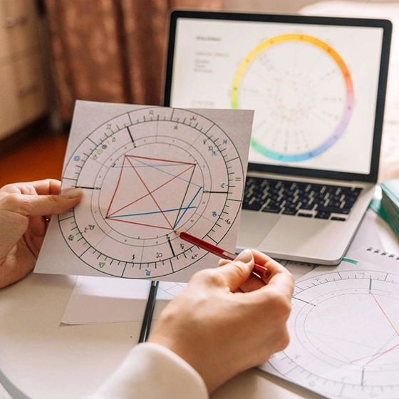
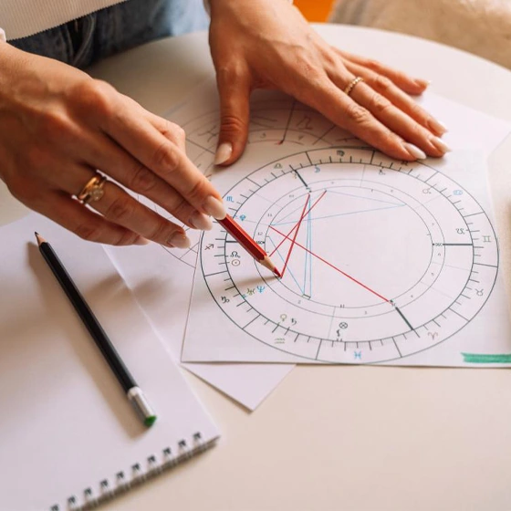

Курси астрології


Українська астрологічна школа
Заснована в Україні 1996 році, як продовження славетних астрологічних традицій які беруть початок з 1247 року, від дружини сина Данила Галицького - Констанції Угорскій, з якою до Львова прибули монахи Домініканці, які вже в той час користувались глибокими знаннями з астрології.
За роки діяльності ми створили потужний осередок, що об'єднує однодумців з усієї країни. Наша школа стала фундаментом для понад 200 випускників, значна частина яких не просто опанувала знання, а трансформувала їх у професію, успішно реалізувавшись у приватній астрологічній практиці.
Курси з астрології
Ми проводить астрологічні курси, різних рівнів, як для початківців, які бажають вивчати предмет з нуля так і для астрологів які постійно підвищувати рівень своїх знань.
На курсах ви зможете опанувати: основи натальної астрологію, прогностичну астрологію, сінастрію, елективну астрологію, хорарну астрологію. Та грунтовно закріпити знання на практиці.
Та по їх закінченню будете впевнено читати натальну карту та проводити астрологічний прогноз по даті народження, складати та тлумачити гороскоп на сумісність різних людей, давати відповіді на питання клієнтів, та чимало іншого.
Чому варто вчитись з нами
Навчаємо
Різна форма навчання астрології. Очні заняття проводиться у Львові, Києві та Івано-Франківську. Також ми проводимо наші курси в онлайн режимі.
Курси
Як для початківців не володіючих знаннями в астрології так і для практикуючих астрологів які прагнуть поповнити свої вміння і оволодіти новими техніками.
Викладачі
Наші викладачі це практикуючі астрологи з багатолітнім досвідом, які вміють донести інформацію і найти індивідуальний підхід до кожного студента.
Забезпечуємо
В процесі навчання надаємо нашим студентам усі потрібні матеріалами та програмне забезпеченням згідно обраного навчального курсу з астрології.
Доступність
Унікальний алгоритм навчання дає змогу зрозуміти і засвоїти матеріал студентам будь якого віку і в подальшому застосувати отримані знання на практиці.
Групи
Очні групи кількістю до 12 осіб, що забезпечує сприятливу атмосферу для кращого засвоювання інформації та створює позитивні умови для навчання.
Індивідуальний астрологічний прогноз
Святослав Корнійчук, практикуючий астролог з досвідом понад 20-ти років, проводить індивідуальні астрологічні консультації для населення.
На яких ви зможете отримати достатньо точний прогноз астролога, що до сприятливих і не сприятливих подій у вашому житті, та періоди їх початку та закінчення. Це дасть вам опору в непрості часи та допоможе знайти ефективні шляхи розв'язання проблем.
Отримайте відповіді на доленосні питання: від сумісності в особистих і ділових стосунках до кар’єрної та фінансової реалізації. Допомога у виборі найкращих сфер для розвитку, зміцненні здоров'я та підборі сприятливих дат для інвестицій, переїзду чи важливих покупок.
Часті питання початківців
Астрологія — це систематизована наука, яка протягом 4 тисяч років вивчає вплив небесних тіл (планет, зірок, Сонця та Місяця) на події, що відбуваються на Землі, включаючи особливості і долю кожної людини.
Астрологія — це потужний інструмент, який дозволяє глибоко пізнати себе та навколишніх, щоб свідомо змінювати життя на краще. Аналізуючи натальну карту, ви отримуєте вичерпні відповіді на ключові питання:
- Які здібності та таланти закладені в людині від народження? Які її сильні сторони і внутрішні ресурси, на які завжди можна розраховувати.
- До яких шаблонів поведінки схильна людина в тих чи інших сферах життя.
- У чому професійне призначення людини? Які напрямки в роботі та справі найбільше підходять людині і природно приведуть до успіху.
- Яких партнерів притягує людина і які сценарії відносин зазвичай розвиваються в її стосунках.
- Які сценарії подій можуть розвиватися в її житті.
- Коли найкращий час діяти? Астрологія показує періоди, коли легше починати нове, рости і розвиватися, а коли — настав час відпускати старе і трансформуватися.
Карта народження або натальна карта — це персональний «знімок» неба в момент народження людини, побудований відносно точки її появи на землі. Вона відображає точне положення планет у знаках Зодіаку та їх розподіл по сітці домів.
Доми — це 12 секторів простору, кожен з яких відповідає за конкретну сферу життя: від кар'єри та фінансів до стосунків і здоров'я. Саме сітка домів робить карту народження індивідуальною, перетворюючи загальне положення планет на унікальний «життєвий сценарій» особистості.
Для її точної побудови в астрологічних програмах вносяться три основних параметри:
- Дата народження: день, місяць і рік народження.
- Час народження: година та хвилини (навіть 4 хвилини різниці можуть змінити положення домів і змістити акценти долі).
- Місце народження: місто або населений пункт для визначення географічних координат, які фіксують лінію горизонту.
Партнерську сумісність розглядає розділ астрології — синастрія. Вона базується на накладанні двох карт народження одна на одну. Основна мета — побачити, наскільки гармонійними можуть бути стосунки з конкретною людиною.
Проаналізувавши карти, можна зрозуміти схожість темпераментів, рівень взаєморозуміння та спорідненість вподобань. Синастрія показує, як кожен із вас сприймає іншого як партнера, наскільки комфортно вам діяти разом та як саме розвиватимуться ваші стосунки.